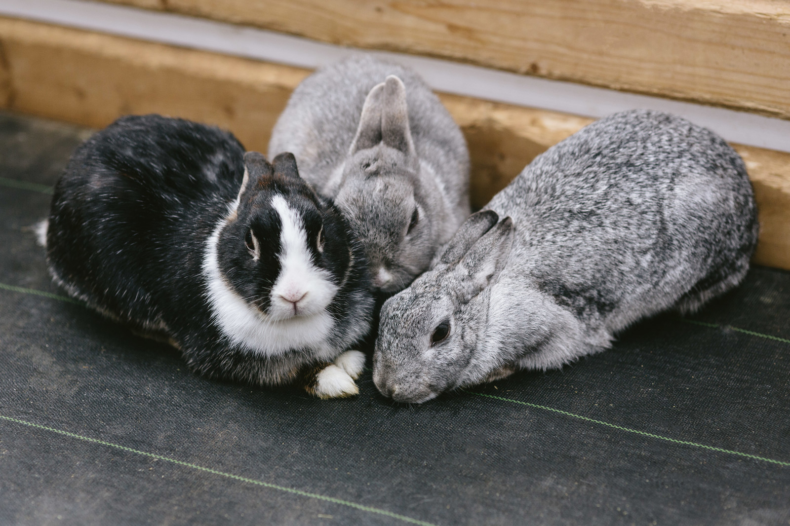

2017年5月20日
サイトをリニューアルしました

このaratama.github.ioはしばらく放置していたんですが、このたびリニューアルしました。
このブログの記事の多くは、Qiitaで私が書いたものをぶっこ抜いてきたものです。 ご存知のかたもいるかもしれませんが、このあいだQiitaの運営方針の変遷(明確化？)により、 技術的な意義に乏しい記事の幾つかが運営者の判断で非公開化されています。 私はQiitaの運営方針には特に疑念や不満はないのですが、私が書いた記事の中にはややポエミーなものもふくまれていて、 そのような記事がQiitaにご迷惑をかけることもあるかもしれないと思い、 記事がいつ消えても構わないようにこちらに複製しておくことにしました。 手動で非公開化ができればいいのですが、いったん公開した記事をユーザが非公開化することはできないようなので、 Qiitaで書いた記事はとりあえず残しておきます。
今後もしポエミーな記事を書きたくなったら、こちらのサイトのほうに書こうと思います。 私は今までツイッターやQiitaくらいしか媒体をもっていなかったのですが、 これで好きなだけポエムを書くことができます。やったね！
なお、このサイトはオレオレ静的サイトジェネレータqbuild.jsにより生成されたものです。
またタグ検索や脚注などの機能の実装が不十分ですが、
記事を閲覧するぶんには問題のない程度だと思います。
今後余裕があったら、また機能の拡充をしていきたいと思います。
草々